less轉css ==> gulp-less: less語法轉化
css壓縮 ==> gulp-csso ：壓縮css
1.安裝gulp-less ==> npm install gulp-less
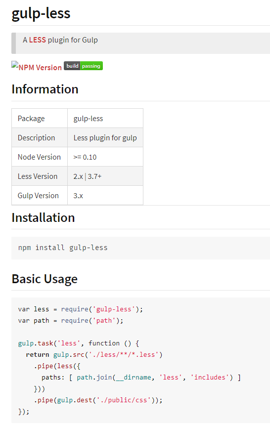
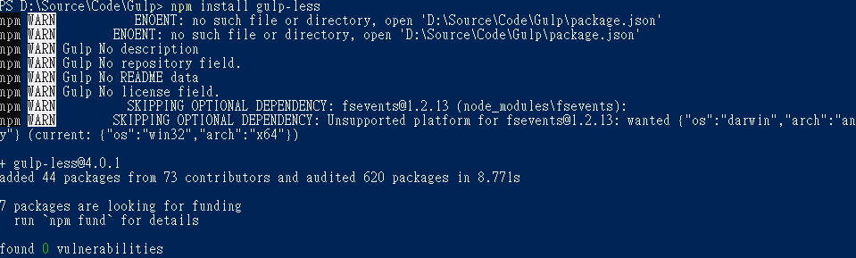
2.安裝gulp-csso ==> npm install gulp-csso
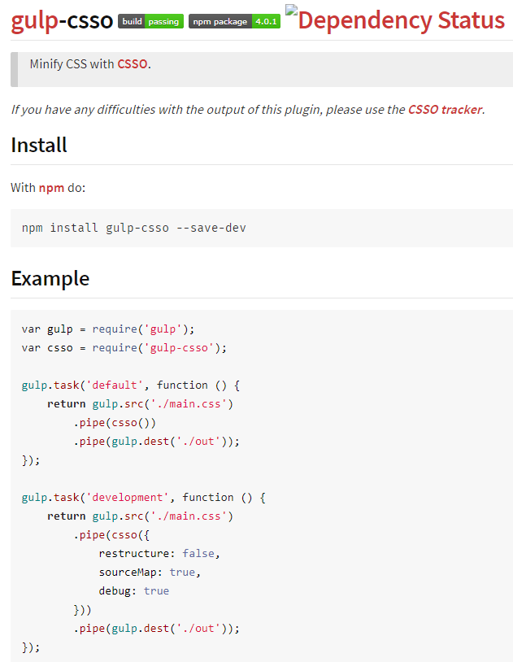
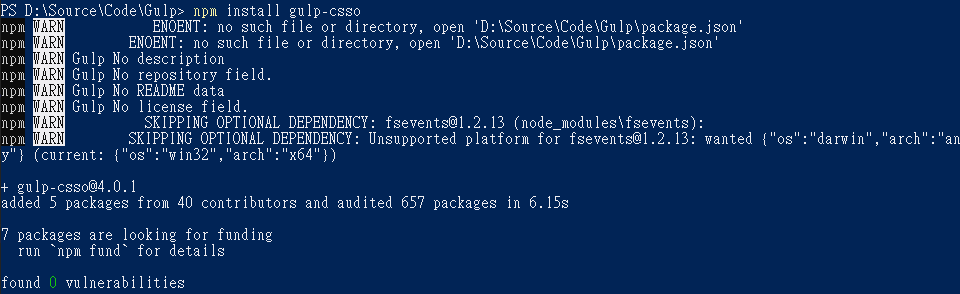
3.引用gulp-less與gulp-csso
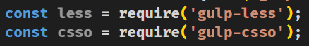
4.編寫程式碼
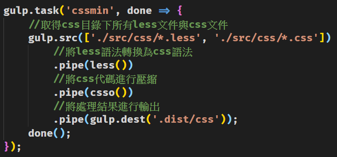
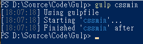
5.結果
前1：
後1： 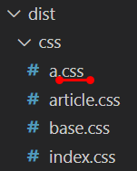
前2：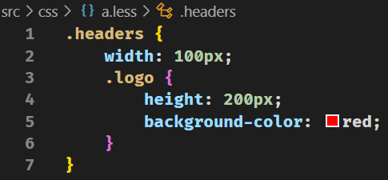
後2：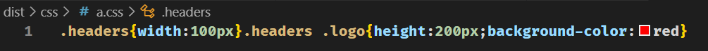
前3：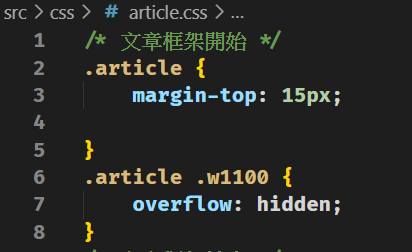
後3：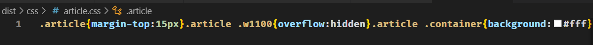